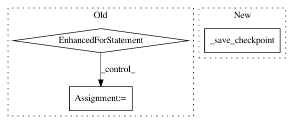

ab6f9e4c489beea3bec518d60629c0f8af0b6123,opennmt/runner.py,Runner,train,#Runner#Any#,263
Before Change
report_every = train_config.get("save_summary_steps", 100)
accum_count = params.get("gradients_accum", 1)
for i, (source, target) in enumerate(dataset):
loss, num_words = _step(source, target)
if i == 0 or (i + 1) % accum_count == 0:
_apply_gradients()
for key, value in six.iteritems(num_words):
value = value.numpy()
if key not in accum_num_words:
accum_num_words[key] = value
else:
accum_num_words[key] += value
step = optimizer.iterations.numpy()
if step % report_every == 0:
last_report_time = _report_training_status(
step,
loss,
optimizer.learning_rate,
accum_num_words,
last_report_time)
if step % save_checkpoints_steps == 0 or step == train_steps:
path = checkpoint_manager.save(checkpoint_number=step)
tf.get_logger().info("Saved checkpoint %s", path)
if step == train_steps:
break
return self._maybe_average_checkpoints()
def evaluate(self, checkpoint_path=None):
Runs evaluation.
After Change
if step == train_steps:
break
_save_checkpoint(step)
return self._maybe_average_checkpoints()
def evaluate(self, checkpoint_path=None):
Runs evaluation.
In pattern: SUPERPATTERN
Frequency: 3
Non-data size: 3
Instances
Project Name: OpenNMT/OpenNMT-tf
Commit Name: ab6f9e4c489beea3bec518d60629c0f8af0b6123
Time: 2019-06-21
Author: guillaume.klein@systrangroup.com
File Name: opennmt/runner.py
Class Name: Runner
Method Name: train
Project Name: OpenNMT/OpenNMT-tf
Commit Name: ab6f9e4c489beea3bec518d60629c0f8af0b6123
Time: 2019-06-21
Author: guillaume.klein@systrangroup.com
File Name: opennmt/runner.py
Class Name: Runner
Method Name: train
Project Name: open-mmlab/mmcv
Commit Name: 50a33950a4b23c614152696e6f979ae978233432
Time: 2020-10-14
Author: swanxinjiang@gmail.com
File Name: mmcv/runner/hooks/checkpoint.py
Class Name: CheckpointHook
Method Name: after_train_iter
Project Name: open-mmlab/mmcv
Commit Name: 50a33950a4b23c614152696e6f979ae978233432
Time: 2020-10-14
Author: swanxinjiang@gmail.com
File Name: mmcv/runner/hooks/checkpoint.py
Class Name: CheckpointHook
Method Name: after_train_epoch